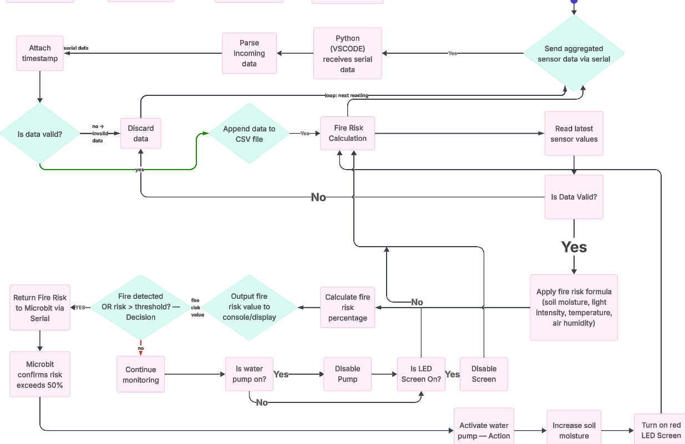
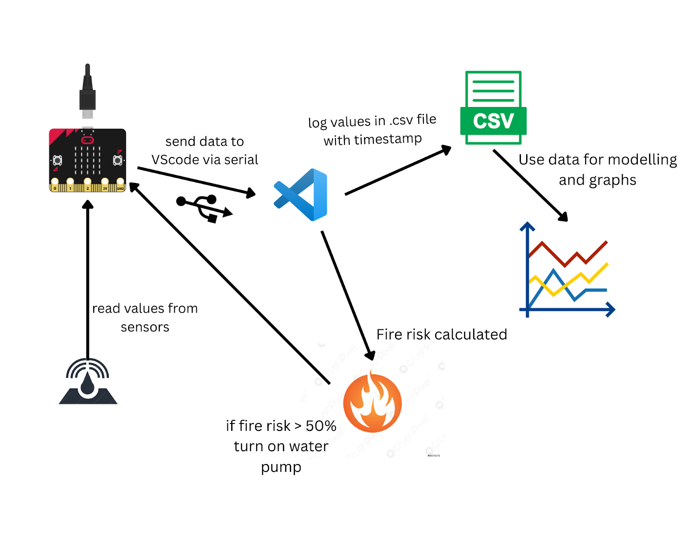

Plan and Design
For this project, I had decided to write the code backend in Python, which would connect a micro:bit and greenhouse sensors via a serial port and calculate values regarding the potential risk of fire. Then the software would save each value to a .csv file so it can be recalled and used for What-If? scenarios and graphing.
I also plan to make the software happen live, where fire risk values will be displayed as data from the sensors and if they exceed 50%, preventative measures (such as increasing soil moisture) will be used.
I also realised end-users want to be able to interpret the data that is gathered, so I will write a graphing script so data can be understood.
Finally, I plan to create a simulation of a forest using all sensor values. This simulation will allow end-users to better understand environmental conditions and fire risk.
Consideration of Different Options and Justification of Design Choices
I had investigated different embedded systems such as Pi Pico’s, ESP-32 and Raspberry Pi embedded boards. All of these come with their own advantages and disadvantages. However, I decided on using a micro:bit as it is easier to use, especially with the native makecode.micro:bit.org website and has a wide range of environmental sensors that are compatible, easy to find and to set up.
I chose the programming language Python due to its ease of use. It also has frequently maintained libraries that are necessary for statistical analysis and moving data between the micro:bit and computer.
Libraries Used
| Library | Purpose |
|---|---|
| Pyserial | Used to transfer data between the micro:bit and Python via serial communication. |
| NumPy | Used for statistical analysis and creating 2D arrays (meshgrid) for simulation modelling. |
| MatPlotLib | Used for graphing sensor data and creating the forest simulation visuals. |
Consideration of Stakeholders and End User Needs
| Stakeholder | Needs | How the Project Meets These Needs |
|---|---|---|
| Farmers | Protect crops and land from fires, prefer automated systems, require ease of use. | System activates water pump automatically when fire risk is high and is designed to run with minimal user input. |
| Firefighters | Early fire detection and fast response. | Sensors detect fire risk early and trigger alerts such as LED displays and system outputs. |
| Environmental Scientists | Accurate environmental data for research and analysis. | Data is collected and stored in .csv files, which can be used for simulations and graphing. |
Technologies Used
Communication Between micro:bit and Backend:
I decided to write a small section of code using the makecode.micro:bit.org website. This allows sensor data values to be read and sent across serial to the Python backend. The embedded code is mainly responsible for communication between sensors and the software logic. The micro:bit software is reliable and supported by a large library of extensions.
Main Body of the Software:
I chose to write the main code in VS Code. Although a mobile application may have been more user-friendly, the target users are environmental technicians and others with technical experience. The software will run automatically once required extensions (Pyserial, Python, NumPy) are installed and the micro:bit is connected.
Data Storage:
All data is stored locally in a .csv file. Since raw .csv data can be difficult to interpret, I will include graphing functionality to display values over time, making patterns easier to understand for the end user.
Below are some diagrams and flowcharts to help understand my project


